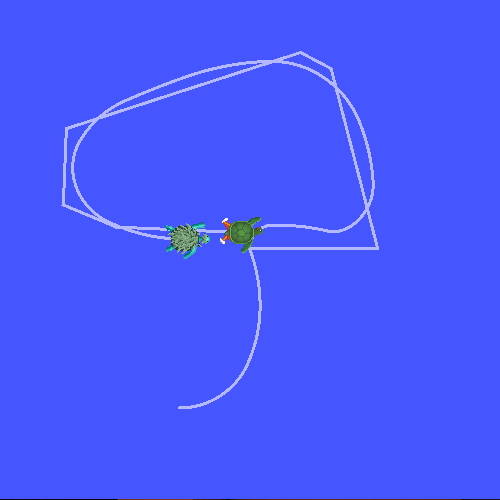

tf2简介 [待校准@8434]
Goal目标: Run运行turtlesim例程，并在使用turtlesim的多机器人示例中查看tf2的某些功能。 [待校准@8435]
Tutorial教程级别: Intermediate中级 [待校准@6713]
Time时间: 10 10分钟 [待校准@7452]
内容 [待校准@6715]
安装例程 [待校准@8436]
让我们从安装例程包及其依赖项开始。 [待校准@8437]
sudo apt-get install ros-foxy-turtle-tf2-py ros-foxy-tf2-tools ros-foxy-tf-transformations
# Clone and build the geometry_tutorials repo using the branch that matches your installation
git clone https://github.com/ros/geometry_tutorials.git -b ros2
此外，安装一个 transforms3d Python包，为 tf_transformations 包提供四元数和欧拉角转换功能。 [待校准@8438]
pip3 install transforms3d
运行例程 [待校准@8439]
现在我们已经安装了 turtle_tf2_py 教程包，让我们运行例程。首先，打开一个新的终端和 source your ROS 2 installation ，这样 ros2 命令就可以工作了。然后运行以下命令: [待校准@8440]
ros2 launch turtle_tf2_py turtle_tf2_demo.launch.py
你会看到海龟从两只海龟开始。 [待校准@8441]

在第二个终端窗口中，键入以下命令: [待校准@8442]
ros2 run turtlesim turtle_teleop_key
一旦turtlesim启动，你可以使用键盘箭头键在turtlesim中驾驶中央海龟，选择第二个终端窗口，这样你的击键将被捕获来驾驶海龟。 [待校准@8443]
你可以看到一只乌龟不断地移动，跟随你正在驾驶的乌龟。 [待校准@8444]
发生了什么？ [待校准@8445]
该例程使用tf2库创建三个坐标帧: 一个 world 帧、一个 turtle1 帧和一个 turtle2 帧。本教程使用tf2广播器发布海龟坐标帧，使用tf2监听程序计算海龟帧的差异，并将一只海龟移动到另一只海龟后面。 [待校准@8446]
tf2工具 [待校准@8447]
现在让我们看看如何使用tf2来创建此例程。我们可以用 tf2_tools 来看看tf2在幕后做了什么。 [待校准@8448]
1使用视图 _ 帧s [待校准@8449]
[需手动修复的语法]``view_frames`` creates图帧被广播tf2在ROS。 [待校准@8450]
ros2 run tf2_tools view_frames.py
您将看到: [待校准@8451]
Listening to tf data during 5 seconds...
Generating graph in frames.pdf file...
在这里，一个tf2听众正在收听通过ROS广播的帧，并绘制出帧如何连接的树。要查看树，请使用您最喜欢的PDF查看器打开生成的 frames.pdf 。 [待校准@8452]

在这里，我们可以看到tf2播放的三帧: world 、 turtle1 和 turtle2 。这里的 world 是 turtle1 和 turtle2 帧的母体。 view_frames 还报告了一些诊断信息，关于最旧和最近的帧转换何时被接收，以及tf2帧发布到tf2以进行调试的速度。 [待校准@8453]
2使用tf2_echo [待校准@8454]
[需手动修复的语法]``tf2_echo`` reports转换任何两个帧s播出超过ROS。 [待校准@8455]
用途: [待校准@8456]
ros2 run tf2_ros tf2_echo [reference_frame] [target_frame]
让我们看一下 turtle2 帧相对于 turtle1 帧的变换，其等效于: [待校准@8457]
ros2 run tf2_ros tf2_echo turtle2 turtle1
当 tf2_echo 听众接收到通过ros2广播的帧时，您将看到显示的转换。 [待校准@8458]
At time 1622031731.625364060
- Translation: [2.796, 1.039, 0.000]
- Rotation: in Quaternion [0.000, 0.000, 0.202, 0.979]
At time 1622031732.614745114
- Translation: [1.608, 0.250, 0.000]
- Rotation: in Quaternion [0.000, 0.000, 0.032, 0.999]
当你驾驶你的海龟时，你会看到当两只海龟相对移动时转变的变化。 [待校准@8459]
rviz和tf2 [待校准@8460]
rviz is a visualization tool that is useful for examining tf2 frames. Let's look at our turtle frames using rviz. Let's start rviz with the turtle_rviz.rviz configuration file using the -d option: [待校准@8461]
ros2 run rviz2 rviz2 -d $(ros2 pkg prefix --share turtle_tf2_py)/rviz/turtle_rviz.rviz

在侧栏中，您将看到tf2播放的帧s。当你驾驶海龟时，你会看到帧在rviz移动。 [待校准@8462]